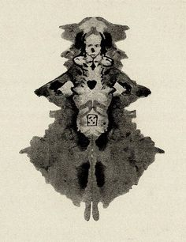

This week - Talked to Jonathan about what to focus on,
not sure, thinking about art in community as there has been a lot of local crime, and wondering
what role art could play in community support. Also remembering my final sculpture projects Sophomore Year,
where I created sculptures that connected development and human construction with nature, exploring
the ways civilization and nature occupy two distinct yet overlapping spaces, that are in a constant
interchange of give and take - cities crumble, forests grow, mines destroy, environmental destruction
is imminent... But in that specific project, I was interested in the way both humans and nature leave
marks on each other, and that they are both fooled by the abstract nature of their marks which inevitably
blur and lose clarity as to which world they are from and which they inhabit.
Now that I think about it, it also relates strongly to the final project I did in Early's digital design,
also exploring an interesting overlap between nature and digital space.

Justinus Kerner invented this technique when he started accidentally
dropping blots of ink onto paper due to failing eyesight.
Instead of throwing them away, he found that intriguing shapes
appeared if he unfolded the papers. He elaborated these shapes
into intricate cartoons and used them to illustrate his poems. Kerner began a
collection of klecksographs and poetry in 1857 titled Klecksographien.
2D design final from freshman year, Digital Dendrology, stills feels like something to revisit at some point.
Generally continuing to explore the relationships between digital and physical experiences.
Back Home